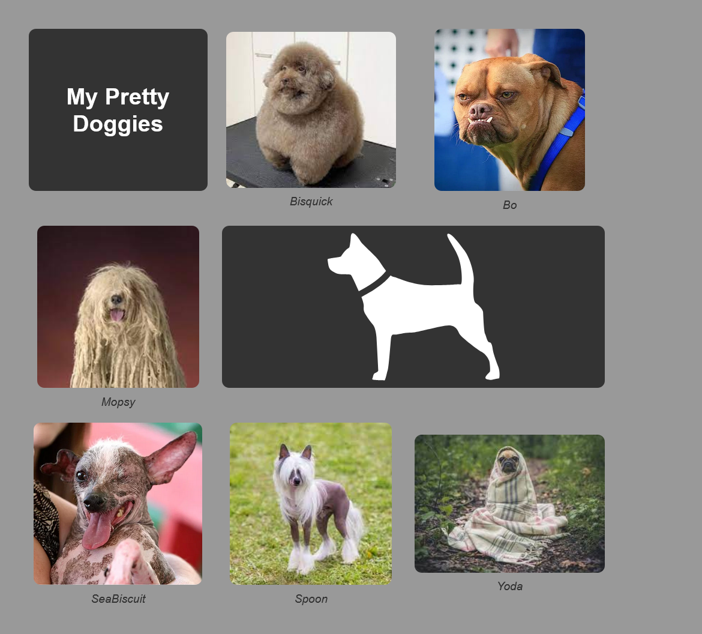

Lab: Creating a Static Photo Gallery
Objective
Create a photo gallery using CSS Grid, apply rounded corners to images,
style the gallery using the HTML figure element, and use effective image
placement.
We will create the following layout:

Setup
-
Create a new folder in your repository root directory called
css_static_photo_gallery.
-
Create a new HTML file (index.html) and a CSS file (styles.css).
- Give your HTML file the title “My Pretty Doggies”
- Link the CSS file to the HTML file.
-
Create a subdirectory called images and place the provided images in
the directory with the exception of the svg.
HTML
Grid Container
-
Inside the body of your HTML file, create a div to serve as the
container for your photo gallery grid items.
- Give the div a class name of "photo-gallery".
-
The grid will contain the following direct children:
- h1: "My Pretty Doggies"
- figure: provided image
- figure: provided image
- figure: provided image
-
svg: provided image;
Note: don't use the file path directly we will do this
inline at a later step
- figure: provided image
- figure: provided image
- figure: provided image
-
In each figure element, include an img element with alt text
attribute.
-
We would normally include width and height attributes, but your
professor did not do that in his solution so leave those out.
-
In each figure element, include a figcaption element with a caption
for each image.
SVG Element
-
To create the svg element, open the file with a text editor and copy
the contents. You can paste them directly into your HTML file where
the svg belongs.
Classes for Grid Children
- Add a class to the h1 element named "secondary-bg".
- Add a class to the svg element named "secondary-bg".
- Add a class to the svg element named "merged".
CSS
Basic Styles
- Begin by applying a CSS reset using the universal selector:
box-sizing: border-box;
margin: 0;
padding: 0;
- Give the body element the following styles:
background-color: #999;
font-family: "Roboto", sans-serif;
color: #fff;
padding: 40px;
Grid Layout
-
Set the style rules needed to up a basic grid using your photo-gallery
class selector:
display: (you provide);
grid-template-columns: (you provide);
grid-template-rows: (you provide);
gap: 20px;
max-width: 800px;
-
Set the style rule(s) for the "merged" class selector. The
svg using this class should span two columns.
Centering Grid Items
-
Use the universal selector to center all items that are immediate
children of the grid container. We will accomplish this by making each
child element a flex container and centering the content.
width: 100%;
display: flex;
text-align: center;
flex-direction: column;
justify-content: center;
align-items: center;
Coloring and Fonts
-
Create a selector to target all figcaption elements that are
descendants of the photo-gallery class selector. Set the following
style rules:
margin-top: 10px;
font-style: italic;
color: #333;
-
Use the secondary-bg class to set a background color of #333 for the
h1 and svg elements.
-
Use the svg-light-fill class to set a fill color of #fff for the svg
element. This class is already in place in the HTML.
Rounded Corners and Max Height
-
Create a multi-selector rule for any h1, img, or svg that is a
descendent of the photo-gallery class selector. Set the following
style rules:
border-radius: 10px;
max-height: 225px;
-
Reminder: you can create a multi-selector rule by separating selectors
with commas.
selector1,
selector2 {
/* styles here */
<!--DOTMARK_DIV</div>